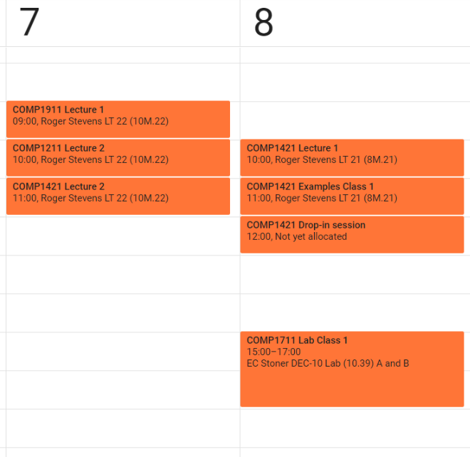
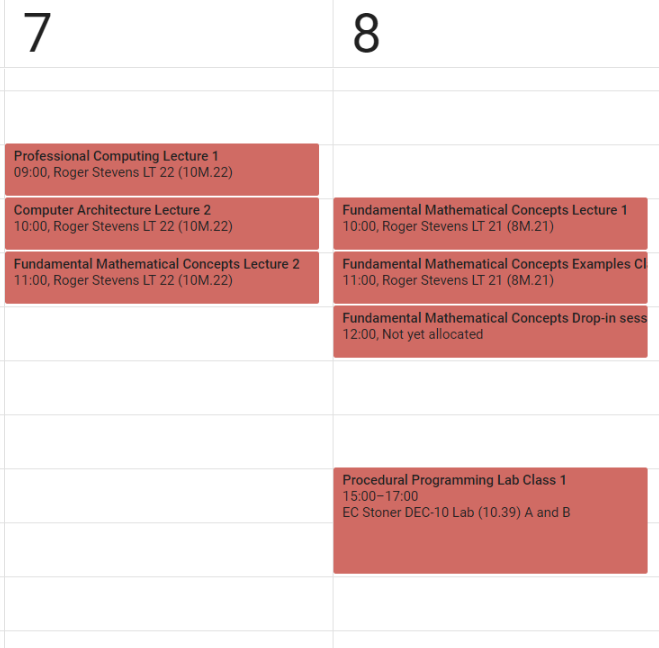
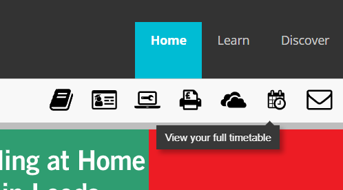

The Great Replacer
Replaces course codes with course names for exporting the Minerva timetable to other calendars.
Input:
Output:
What is this?
By default, when Minerva timetables are imported into another calendar (like Google calendar), they have the module codes in the event titles:
The Great Replacer can replace these module codes with the actual module names for you (e.g. COMP1711 is replaced by "Procedural Programing"). It's a really simple tool, but I needed it badly.
Note: if you simply want your calendar to look better, and don't need to import it anywhere, I suggest you try Usama's Timetable tool.
Instructions
- Go to Minerva. Log in if prompted.
- Click "View your timetable" at the top right corner
 - Choose "Semester view"
- Click "Download an iCal file". When the file is created, click "Click here".
(At this point, you can import the file into your calendar. However, you will see annoying module codes instead of module names)
- Open the downloaded file in a text editor. Copy the contents of the file into the input section.
- The output section is automatically updated soon. Copy the contents of the output section back into the text editor.
- Save the file, with the same
.icsextension. - Import the
.icsfile into your calendar
How does it work?
There is some really simple javascript that goes through a lookup table and simply replaces strings. The lookup table was scrapped with another script from the University of Leeds website.